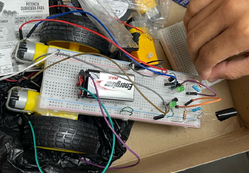
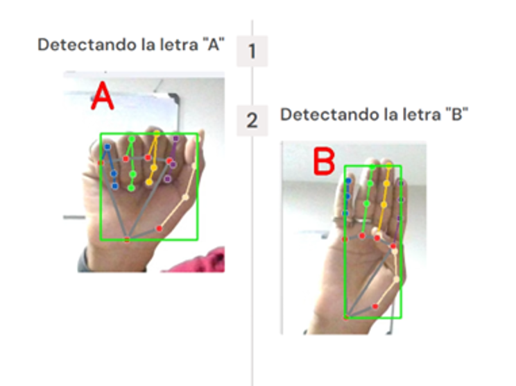
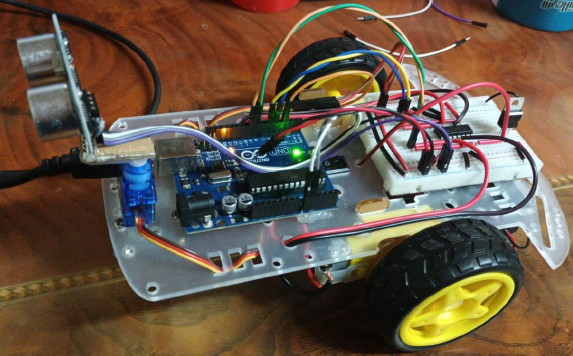

Estudiante Universitario

Datos Personales
- Nombre Completo: Misael Ariel Delgado Reyes
- Edad: 20 años
- Fecha de nacimiento: 2 de abril del 2005
- Correo personal: misaeldelgadoreyes@outlook.com
- Telefono: +593 0989611436
- Direccion: Ecuador, Guayaquil, Guasmo
Habilidades
- Lenguajes de programación: Python, JavaScript, Java, SQL Server.
- Herramientas de desarrollo web: HTML, CSS, JavaScript.
- Conocimientos en electrónica: Circuitos analógicos y digitales.
- Trabajo en equipo: Colaboración en proyectos académicos y personales.
- Sistemas Operativos: Linux
- Uso de Cisco Packet Tracer para simulación de redes
Idiomas
- Español
- Ingles
Misael Ariel Delgado Reyes
Informacion sobre mi
Estudiante de la carrera de Computación en la Universidad Politecnica Salesiana (UPS),
estoy cursando el 5 semestre de mi carrera. Programado Junior en paginas web con conocimientos
en Python, JavaScript, Java y Sql Server. Durante mi carrera hasta ahora he creado un proyecto
en electronica con un sistema añalogico y otro con un Sistema Embebido.
Formación académica
- Universidad: Politécnica Salesiana (UPS).
- Unidad Educativa Fiscal: Agustin Vera Loor.
- Unidad Educativa Fiscal: Antonio Jose de Sucre.
- Desde: 2017 - 2020.
Estudios superiores
-
Carrera: Computación.
Desde: 2022 hasta la actualidad.
Secundaria
-
Desde: 2020 - 2022.
Proyectos
Vehículo controlado por luz
Descripción: Es un vehículo autonomo sin arduino que se mueva cuando
detecta una luz al frente y se detiene cuando no hay luz. Su circuito simple
y su facil construcción, lo combierte en un proyecto muy divertido
para principiantes de la robotica analógica.
- Materias: Electronica
- Institución: Universidad Politecnica Salesiana
- Fecha: 2023 - 2023
Traductor de lenguaje de señas
Descripción: Pagina web que traduce el lenguaje de señas de personas sordo mudas a
cualquier persona que desee, consiste en una camara que, viendo las señas, el programa
traduce con voz lo que significa cada seña.
- Materias: Arquitectura del computador
- Institución: Universidad Politecnica Salesiana
- Fecha: 2024 - 2024
Robot evitador de obstáculos
Descripción: Es un robot que opera de manera autonoma y su funcion es esquivar
obstaculos con los que se encuentre en el camino. Trabaja con un codigo en el
arduino y utiliza un sensor ultrasonico para detectar los objetos que se encuentre.
- Materias: Sitemas Embebidos
- Institución: Universidad Politecnica Salesiana
- Fecha: 2025 - 2025